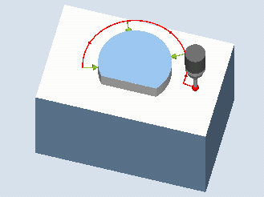

This measuring variant can be used to measure circle segment from the outside. The diameter and the center point of the circle segment in the plane are determined. With the selection setpoint value center point "YES", the position of the circle segment center can be defined as the workpiece zero by means of setpoint specifications. With a starting angle in relation to the 1st geometry axis of the plane, the measuring points can be shifted along the circumference of the circle segment. The distance between the measuring points along the circumference is defined using an incremental angle.
With the "3D probe with spindle reversal" measuring method, measurement is performed in the axes of the plane as differential measurement. The special procedure for this measurement permits the use of an uncalibrated multi-directional probe. Probe types 712, 713 and 714 are not suitable for this purpose. A positionable spindle is mandatory.
With the "Align 3D probe" measuring method, the switching direction of the probe is always aligned to the current measuring direction. This function is recommended when high demands are placed on the measuring accuracy. Probe types 712, 713 and 714 are not suitable for this purpose. A positionable spindle is mandatory.
The measurement result (measurement difference) can be used for the following:
Correction of a WO so that the workpiece zero is in relation to the center point of the circle segment
Offset of a tool
Measurement without offset
An extended tool offset in the replacement tools as well as additive and setup offsets are also possible. Empirical values can generally be included in the calculations for tool offsets.
The circle segment can be measured with three or four measuring points. The intermediate positions to the measuring points are not approached along a circular path parallel to the geometry axis. The distance between the probe ball circumference and the hole corresponds to the measuring path DFA. The direction of the circular path is obtained from the sign of the incremental angle. The measuring path from the intermediate positions to the measuring points is radial to the hole periphery.
The circle segment obtained from the number of measuring points and the incremental angle must not exceed 360 degrees. The measured difference of the segment diameter is used as tool offset, the segment zero point as a basis for a zero offset.
Measure: Outer circle segment (CYCLE977)
The probe must be active as tool.
Tool type of the probe:
3D multi probe (type 710)
Mono probe (type 712)
| Note |
The following measuring methods are only possible in the axes of the plane:
The probe types 712, 713 and 714 generally cannot be used for these measuring methods. |
| Note |
When measuring circle segments of < 90 degrees, it should be noted that, mathematically speaking, measuring points that deviate from the circular shape exert a particularly great influence on the accuracy of the results (center point, diameter). For this reason, an especially high degree of care should be taken when measuring small circle segments. Good results can be attained if the following procedures are used: The circle segment to be measured should be:
|
| Note |
A SPOS-capable spindle is needed for the functions "3D probe with spindle reversal", "Align 3D probe", or for probe type 712. |
The probe is in the 3rd axis of the plane (tool axis) at the required measuring height, approx. at a distance of the measuring path DFA in front of the first measuring point. When selecting this preliminary position in the axes of the plane, the start angle setting must be taken into account. This is because the first measuring point and all additional ones are shifted on the circular path through the start angle.
Using a start angle of 180° as example, the first contact point is on the opposite side of the hole to be measured. If this would not be taken into account for the start position, then a collision would occur with possible obstructions in the hole.
At the end of the measurement, the probe ball circumference is a distance of the measuring path DFA radially from the last measuring point at the measuring height.
| Note |
The range of the measuring cycle starting points with regard to the circle segment center point must be within the value of the measuring path DFA, otherwise, there is danger of collision or the measurement cannot be performed! |
See also:
Measure: Outer circle segment (CYCLE979)